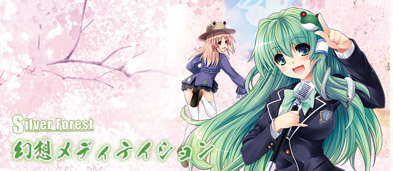

| |||||||||||||||||||||||||||||||||||||||||||||||||||||||||||||
|
| |||||||||||||||||||||||||||||||||||||||||||||||||||||||||||||
| TOP - 幻想メディテイション - BESTⅤ - BESTⅥ - 幽滅クインラット - About us - youtube - ニコ生 - Twitter | |||||||||||||||||||||||||||||||||||||||||||||||||||||||||||||
|
■東方アレンジCD「幻想メディテイション」 ボーカルさゆり復帰、第5弾CD！！ 5月2日(土) 春コミC98「Silver Forest」エアスペースおよび 各委託ショップで1200円にて初頒布予定 | |||||||||||||||||||||||||||||||||||||||||||||||||||||||||||||
|
■ショップ委託はこちら↓  ■幻想メディテイション クロスフェードMVはこちら ■幻想メディテイション 収録曲詳細 mp3試聴
| |||||||||||||||||||||||||||||||||||||||||||||||||||||||||||||